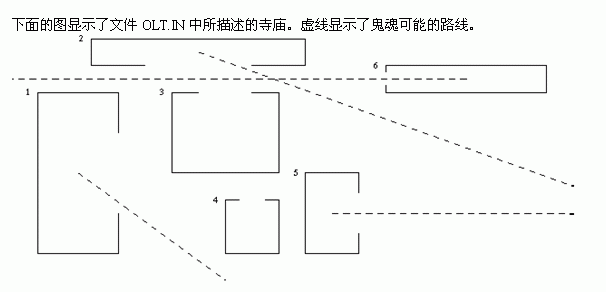

首行有一个整数n被列出（1 <= n <= 1000）。
在接下来的n行的每一行有一个寺庙的描述（在第I行有第I个寺庙的描述）。寺庙的描述由四个非负的不大于8000的整数和字母E,W,S和N组成。头两个数字是寺庙的西北角的坐标，接下来的两个是相对的东南角的坐标。为了指定一个点的坐标，我们给出了它的地理精度，从西往东增加，纬度从南往北增加。描述的第五个元素代表入口的墙（E-东，W-西，S-南，N-北）。寺庙的描述元素由单空格隔开。
6
1 7 4 1 E
3 9 11 8 S
6 7 10 4 N
8 3 10 1 N
11 4 13 1 E
14 8 20 7 W
1
2
5
6
